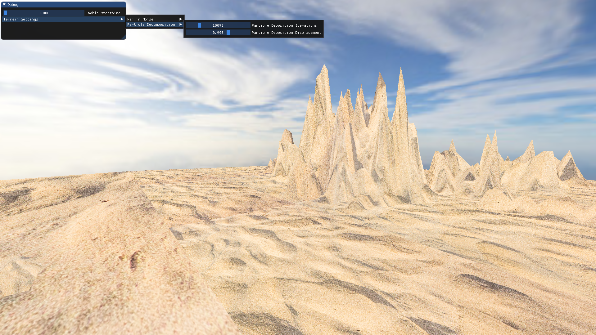
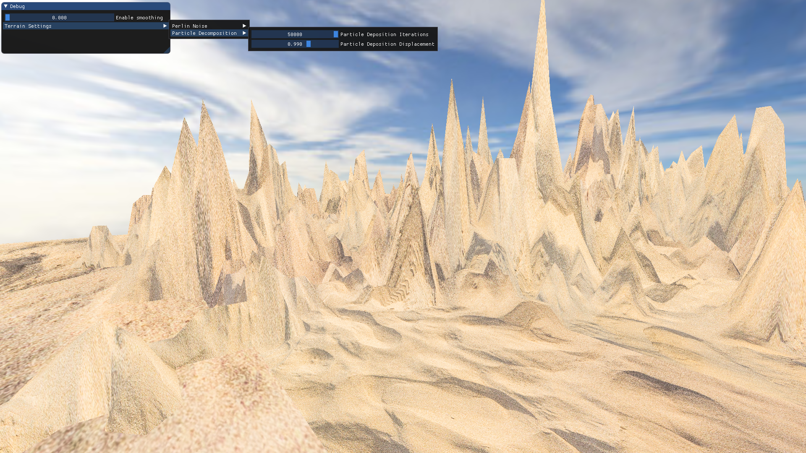
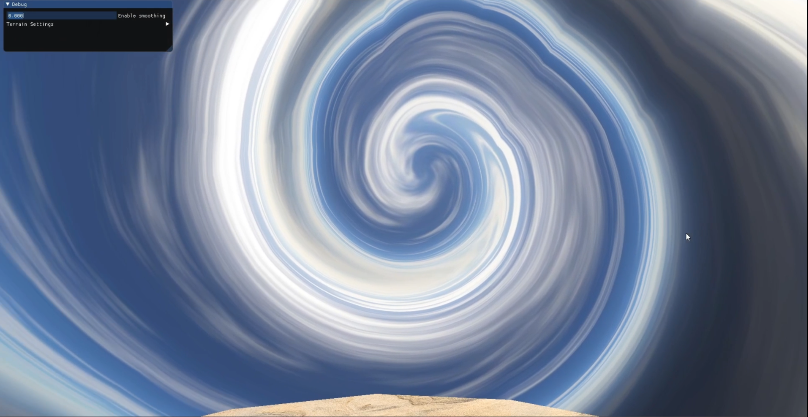

THE BEACH
- Platform : Windows
- Made with: Directx 11
- Language : C++, HLSL
- Duration : 1.5 months
- Project type : Solo
This project was created as part of my coursework on 3D graphics. As the name suggests Beach is a scene of a Beach made in Directx11 3D, showcasing procedural gneration techniques and post processing. The scene is made up of 3 components, sand, procedurally generated mountains and sea.
Particle decomposition is a technique which involves breaking down a larger structure or system into smaller elements and then recreating the entire structure through the interaction and arrangement of these smaller components. Imagine creating a complex landscape. Instead of generating the entire terrain at once, you might break it down into smaller elements, such as generating individual particles that represent terrain features like mountains, valleys, rivers, and forests.
In this project particle decomposition is applied only on the generation of mountains and the way it works is, we start with a random point in terrain, set a constant number of iteration to do. Then loop through these iterations to get a new particle (a point in terrain) and define a way this particles interact, for example, adding a displacement on the y-coordinate (height of mountains) of an index generated by a combination of x and the z-coordinate. What this basically does is generate the height of mountains (according to some rule) on a cluster of points around the randomly chosen point in terrain.
 
Post processing:
The skybox has a post processing effect, which looks like a swirling motion in the sky. This is done in pixel shader by adding a sinusoidal displacement to the texture coordinates based on the angle and the swirling factor, to get new texture co-ordinates for the color value of each pixel.

Water Waves:
The water has wave like effects to simulate the sea. This is done by adding vertical and horizontal movements. Horizontsl movement helps simulate flowing water, it was done by changing the coordinates of texture color with time in pixel shader. Vertical movement helps simulate wave like effects, it was done by updating the height map of water by a very small value at each frame.